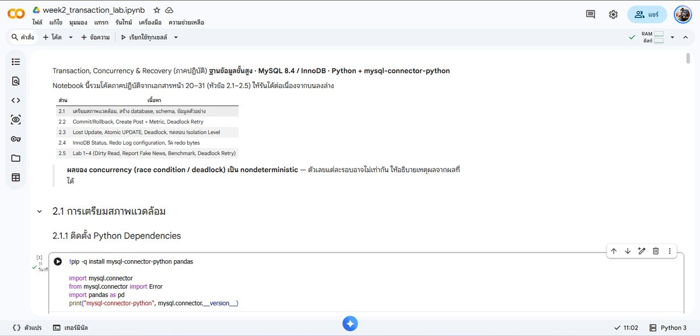

งานชิ้นที่ 1
Transaction, Concurrency & Recovery (MySQL / InnoDB)
ภาคปฏิบัติด้วย Python + mysql-connector-python: Commit/Rollback, Lost Update, Deadlock, Isolation Level, InnoDB Redo Log และ Lab ทดสอบ Dirty Read